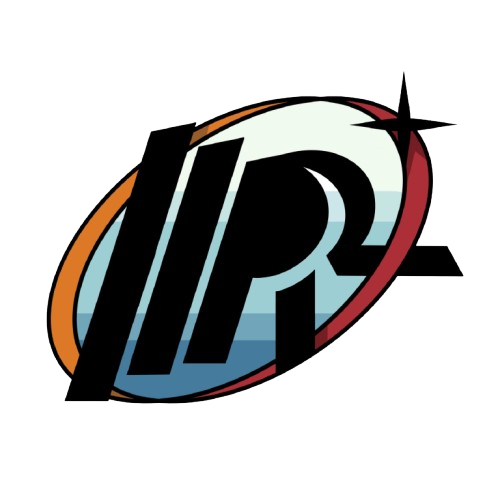

URC-MR2
Contents:
What is URC?
Members
Rover
Gallery
Documentation
URC-MR2
Welcome to URC-MR2!
View page source
Welcome to URC-MR2!
Contents:
What is URC?
Members
Rover
Gallery
Documentation
Our Work Video
